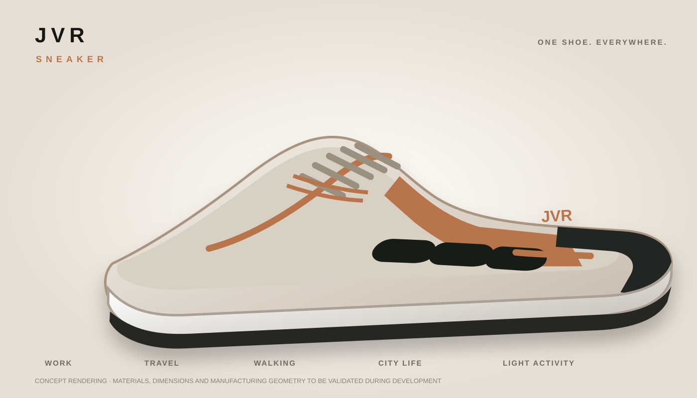

JVR Sneaker is a distinctive all-purpose lace-up footwear concept designed for everyday life, work, travel, walking, light activity, city life and ordinary outdoor use.

The concept combines fit, comfort, support, controlled flexibility and multi-surface ground contact into a single visual system, rather than adding electronics or a separate accessory.
Conventional laces remain the primary user-controlled fit adjustment, with reinforced attachment zones.
A sculpted side element is designed to visually connect the upper and lower structure while providing defined support zones.
The foot-facing comfort and cushioning functions are separated from selected exterior support functions.
Defined flexible regions are intended to permit natural walking movement while retaining a stable base.
Heel, transition, forefoot and perimeter regions are planned for everyday mixed-surface use.
A premium neutral upper with copper accent options gives the concept a recognizable visual identity.
The intended experience is a premium everyday sneaker that can move between different parts of a normal day.
Performance terms are development targets, not laboratory-validated claims.
Confirm last, sizing, silhouette, toe-box volume, collar, lace position and overall visual balance.
Test the side structure, cushioning interaction, lower flex, torsion and outsole geometry.
Combine candidate materials and structure for walking, traction, durability and long-duration comfort testing.
BUILD → FINISH → VALIDATE → FIND STRATEGIC FOOTWEAR BUYER → SELL OUTRIGHT → HAND OVER → WALK AWAY.
JVR Sneaker is a working name only. An acquiring company may rename, rebrand and further develop the product.
The complete product-development concept is available for discussion with a strategic footwear company that wants to take the design through its own engineering, materials, tooling, testing, manufacturing and brand process.
This is a development concept. It is not presented as patented, patent-pending, certified, waterproof, laboratory-validated, exclusive or legally cleared.
Working name only. The acquiring company can rename and rebrand it.
vanreenen.juanita@yahoo.com